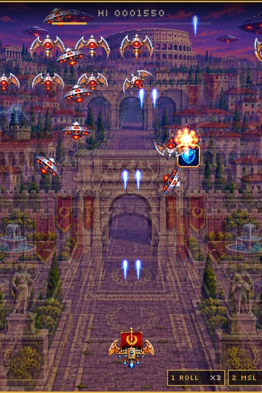
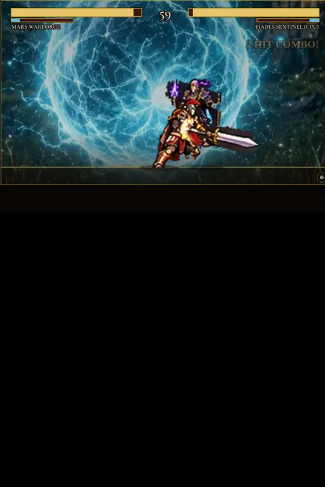
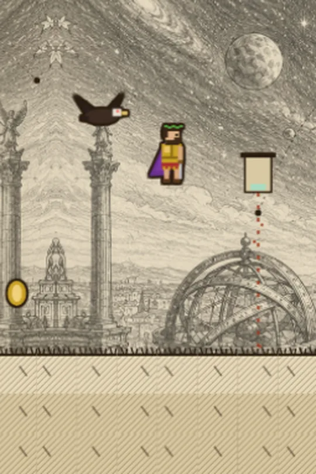
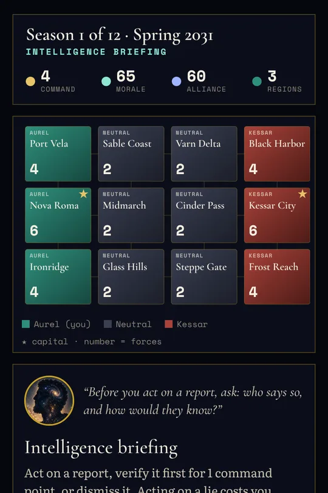
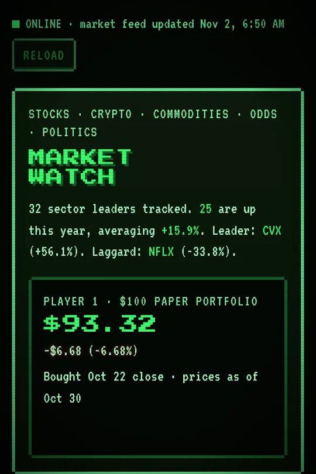
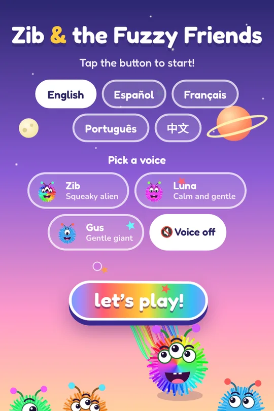

THE ARCADE
Beyond the page: things I build for screens. They all run right in your browser, on any phone or computer, with nothing to install.
-
Action Adventure · New
The Last Sun
Fight through an ancient jungle in this side-scrolling action adventure. Play as Itzá or Balam, dodge danger, and face powerful bosses.
Play Now → -

Space Shooter · New
Legio Stellaris
Rise from lowly Star Fighter to Imperator. Eight levels of side-scrolling and Galaga-style battles against a saucer invasion, with barrel rolls, missile strikes, EMPs and chain lightning.
Play Now → -

Fighting Game · New
Roman Arena: Gods of the Machine
Thirteen legends in a one-on-one arena fighter: punches, kicks, chain combos, supers and combo breakers. Play the computer or a friend.
Play Now → -

Adventure Game · New
The Aurelious Quest
A side-scroller drawn in the style of the Stoic books. Marcus runs, leaps and fights soldiers, eagles and electric fields to recover the lost scrolls of the Meditations.
Play Now → -

Strategy Game
Critical Thinking for a Stoic Mind
A 21st-century war strategy game with Marcus Aurelius as your advisor. Judge fake intel, command the map, and make the hard calls like a Stoic.
Play Now → -

Web App · Markets & Odds
Market Watch
Stocks, crypto, Kalshi prediction markets, sportsbook odds and Congress trades in big, easy-to-read 8-bit style. Not financial advice.
Open the App → -

Kids' Game · Ages 4+
Zib & the Fuzzy Friends
A gentle skills game made with neurodivergent kids in mind: calm breathing, feelings, focus and kindness, in five languages.
Play Now →